8 Lists, tables and trees
An important part of user interfaces is displaying lists of data. Such lists can be structured as tables, plain lists, but also trees supporting the nesting of data.
Spec provides three main presenters: SpListPresenter, SpTreePresenter, and SpTablePresenter. In addition, it offers SpComponentListPresenter which allows one to embed any presenter in a list. In this chapter, we present some of the functionality of these presenters.
8.1 Lists
Creating a list is as simple as instantiating a SpListPresenter and specifying a list of items that the list should display.
The following script illustrates this and the result is shown in Figure 8.1.
SpListPresenter new
items: Collection withAllSubclasses;
open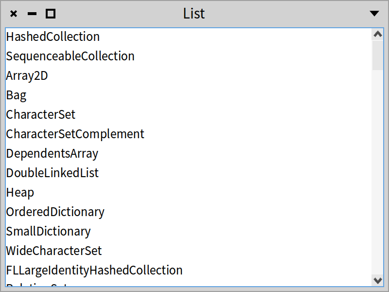
We can change the header title of the list using the message headerTitle:. The header title can be hidden using the message hideHeaderTitle.
8.2 Controlling item display
By default a list item is displayed using the result of the asStringOrText message sent to the item.
We can configure a list to apply a block to control the display of each item using the message display:.
The following script configures a list presenter to display the name of the methods of the class Point instead of showing the result of asStringOrText. See Figure 8.2.
SpListPresenter new
items: Point methods;
display: [ :item | item selector ];
open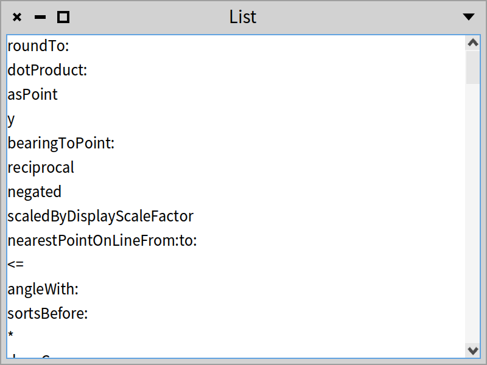
We can sort the items using the message sortingBlock:.
SpListPresenter new
items: Point methods;
display: [ :item | item selector ];
sortingBlock: [ :a :b | a selector < b selector ];
open8.3 Decorating elements
We can configure the way items are displayed in a more fine-grained way. The following example illustrates it. We can control the icon associated with the item using the message displayIcon:, and the item color using the message displayColor:. The format (bold, italic, underline) can be controlled by the corresponding messages displayItalic:, displayBold: and displayUnderline:. See Figure 8.3.
| presenter |
presenter := SpListPresenter new.
presenter
items: Collection withAllSubclasses;
displayIcon: [ :aClass | self iconNamed: aClass systemIconName ];
displayColor: [ :aClass |
(aClass name endsWith: 'Set')
ifTrue: [ Color green ]
ifFalse: [ presenter theme textColor ] ];
displayItalic: [ :aClass | aClass isAbstract ];
displayBold: [ :aClass | aClass hasSubclasses ];
displayUnderline: [ :aClass | aClass numberOfMethods > 10 ];
open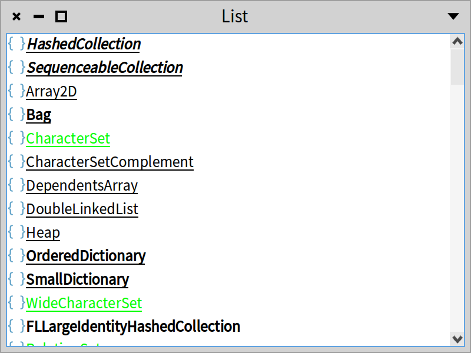
8.4 About single/multiple selection
Lists support multiple selections. The message beMultipleSelection controls that aspect.
SpListPresenter new
items: Collection withAllSubclasses;
beMultipleSelection;
openSince selection can hold multiple items, there is an impact on the protocol to react to selection changes. Indeed, lists, filtering lists, trees, and tables offer the whenSelectionChangedDo: API and not whenSelectedItemDo:. The argument of the block is an instance of SpSingleSelectionMode, SpMultipleSelectionMode, SpTreeMultipleSelectionMode or SpTreeSingleSelectionMode.
Here is a typical use case of the method whenSelectionChangedDo:.
connectPresenters
changesTree whenSelectionChangedDo: [ :selection | | diff |
diff := selection selectedItem
ifNil: [ '' ]
ifNotNil: [ :item | self buildDiffFor: item ].
textArea text: diff ]8.5 Drag and drop
Lists and other container structures support drag and drop. The following script shows how to configure two lists to support dragging from one and dropping in another.
| list1 list2 |
list1 := SpListPresenter new.
list1
items: #( 'abc' 'def' 'xyz' );
dragEnabled: true.
list2 := SpListPresenter new.
list2 dropEnabled: true;
wantsDrop: [ :transfer | transfer passenger
allSatisfy: [:each | each isString ] ];
acceptDrop: [ :transfer | list2 items: list2 items , transfer passenger ].
SpPresenter new
layout: (SpBoxLayout newLeftToRight
add: list1;
add: list2;
yourself);
openThe following script illustrates the API.
dragEnabled:configures the receiver to allow dragging of its items.dropEnabled:configures the receiver to accept dropped items.wantsDrop: [ :transfer | transfer passenger allSatisfy: [:each | each isString ]. With the messagewantsDrop:we can specify a predicate to accept dropped elements.acceptDrop: [ :transfer | list2 items: list2 items , transfer passenger ]. The messageacceptDrop:specifies the treatment performed once the dropped items are accepted.
8.6 Activation clicks
An element on a list can be activated, meaning it will trigger an event to execute an action on it. Note that an activation is different than a selection: one can select an element without activating it. The message activateOnDoubleClick configures the list to react to double click, while its counterpart is activateOnSingleClick.
8.7 Filtering lists
Lists can also be filtered as shown in Figure 8.4. The following script shows the use of the SpFilteringListPresenter.
SpFilteringListPresenter new
items: Collection withAllSubclasses;
open;
withWindowDo: [ :window |
window title: 'SpFilteringListPresenter example' ]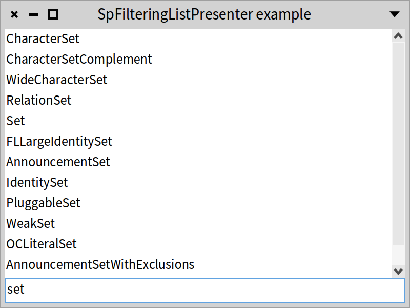
The following script shows that the filter can be placed at the top.
SpFilteringListPresenter new
items: Collection withAllSubclasses;
openWithLayout: SpFilteringListPresenter topLayout;
withWindowDo: [ :window |
window title: 'SpFilteringListPresenter example' ]Note that a filter can be declared upfront using the message applyFilter:.
SpFilteringListPresenter new
items: Collection withAllSubclasses;
openWithLayout: SpFilteringListPresenter topLayout;
applyFilter: 'set';
withWindowDo: [ :window |
window title: 'SpFilteringListPresenter prefiltered example' ]8.8 Selectable filtering lists
Often lists are used to select items. This is what the class SpFilteringSelectableListPresenter offers. In addition to being able to filter items, it lets the user select items by ticking them as shown by Figure 8.5.
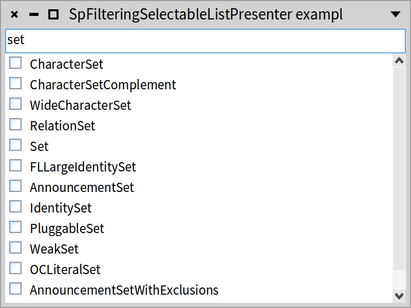
The following script illustrates such a selectable list with filter.
(SpFilteringSelectableListPresenter new
items: Collection withAllSubclasses;
layout: SpFilteringListPresenter topLayout;
applyFilter: 'set';
asWindow)
title: 'SpFilteringSelectableListPresenter example';
open8.9 Component lists
While the lists we saw until now are homogeneous in the sense that they all display strings, Spec offers the possibility to display a list of presenters. It means that elements in the list do not have the same size and can contain other presenters.
This lets developers produce advanced user interfaces such as the one of the report builder of the ModMoose tool suite shown in Figure 8.6.
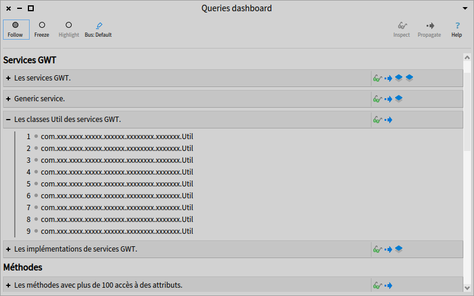
The following script shows how to define a SpComponentListPresenter as shown in Figure 8.7.
| list |
list := {
(SpLabelPresenter new
label: 'Test 1';
yourself).
(SpImagePresenter new
image: (self iconNamed: #smallOk);
yourself).
(SpButtonPresenter new
label: 'A button';
yourself).
(SpImagePresenter new
image: PolymorphSystemSettings pharoLogo asForm;
yourself) }.
SpComponentListPresenter new
presenters: list;
open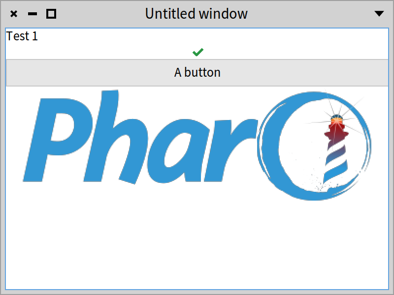
8.10 Trees
Spec offers also trees. The following script shows how to list all the classes of Pharo using inheritance as shown by Figure 8.8.
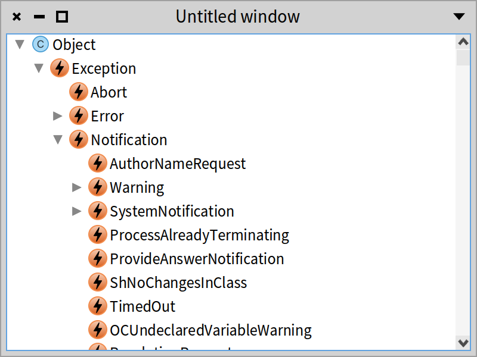Exception.
SpTreePresenter new
roots: { Object };
children: [ :aClass | aClass subclasses ];
displayIcon: [ :aClass | self iconNamed: aClass systemIconName ];
display: [ :aClass | aClass name ];
expandPath: #( 1 1 3 );
openThe message expandPath: shows that we can expand a specific item by a path.
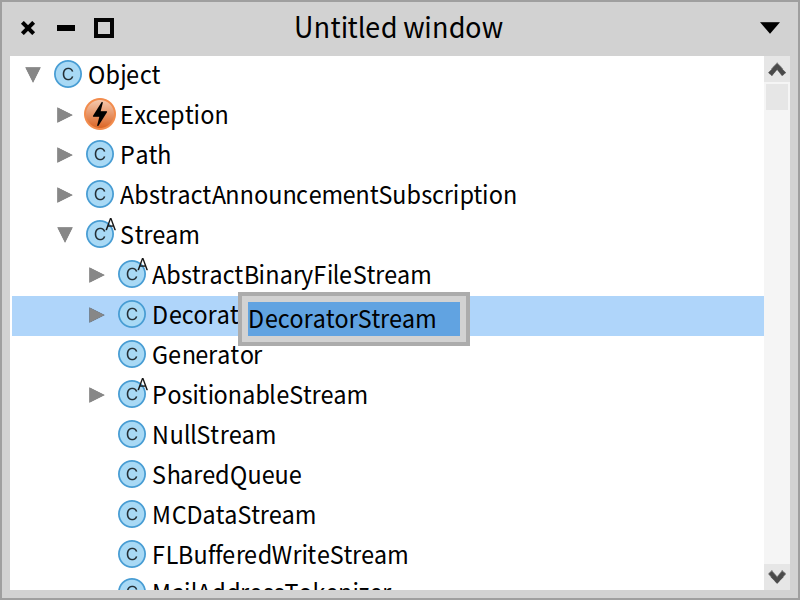
The following script shows how to use a dynamic context menu. This is a dynamic menu because its content is recalculated. The dynamic aspect is expressed by a block. Figure 8.9 shows the result.
| tree |
tree := SpTreePresenter new.
tree roots: { Object };
children: [ :aClass | aClass subclasses ];
displayIcon: [ :aClass | self iconNamed: aClass systemIconName ];
display: [ :aClass | aClass name ];
contextMenu: [
SpMenuPresenter new
addGroup: [ :group |
group addItem: [ :item | item name: tree selectedItem asString ] ] ];
openThe following script shows the use of the message selectPathByItems:scrollToSelection:, which allows selecting elements by specifying a list of items (a path from the root to the selected item) and asking the tree to scroll to the selection. Figure 8.10 shows the result.
| pathToSpPresenter |
pathToSpPresenter := SpTreePresenter withAllSuperclasses reversed allButFirst.
SpTreePresenter new
roots: { Object };
children: [ :aClass | aClass subclasses ];
displayIcon: [ :aClass | self iconNamed: aClass systemIconName ];
display: [ :aClass | aClass name ];
open;
selectPathByItems: pathToSpPresenter scrollToSelection: true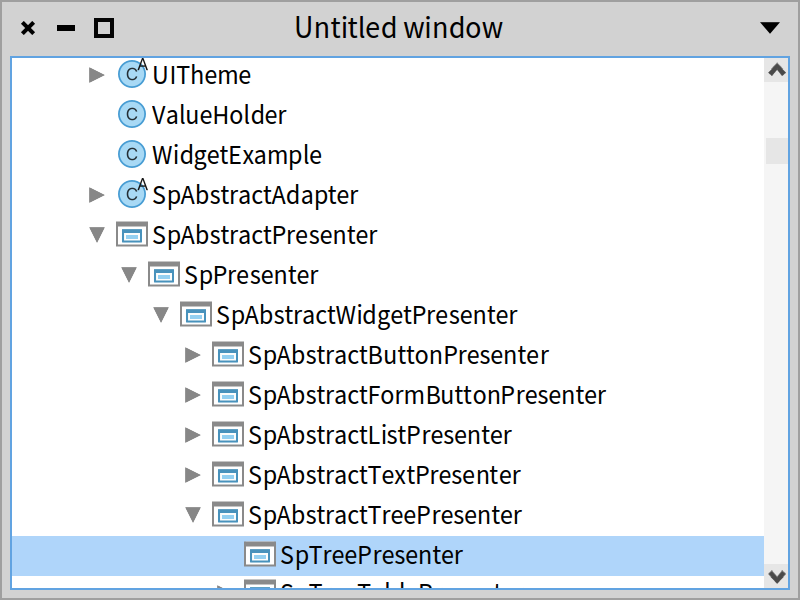
8.11 Tables
Spec offers tables. A table can have multiple columns and a column can be composed of elementary elements. Tables have different kinds of columns that can be added to a table:
SpStringTableColumnoffers cell items that are strings.SpCheckBoxTableColumnlets us have cells with a checkbox.SpIndexTableColumndisplays the index of the current item.SpDropListTableColumnlets us have a drop list in cells.SpImageTableColumnoffers cell items with forms (icons, graphics, ...).SpCompositeTableColumnoffers the possibility to compose a column out of different kinds of columns. For instance, it allows one to compose an icon (SpImageTableColumn) with a name (SpStringTableColumn).
8.12 First table
The following script shows how to define a simple table with two columns as shown in Figure 8.11. The message showColumnHeaders will display the headers.
SpTablePresenter new
addColumn: (SpStringTableColumn title: 'Number' evaluated: #yourself);
addColumn: (SpStringTableColumn title: 'Hex' evaluated: #hex);
showColumnHeaders;
items: (1 to: 10);
open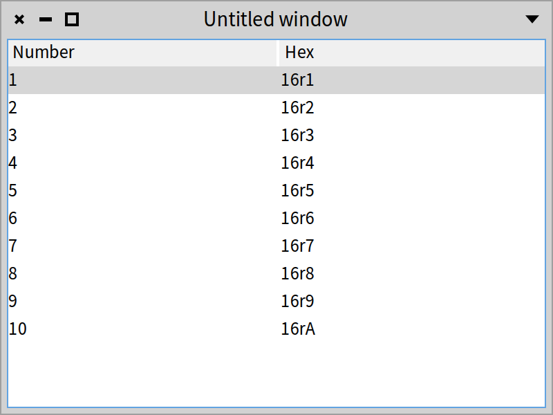
Add SpIndexTableColumn title: 'My index' to the previous table to see the index column in action.
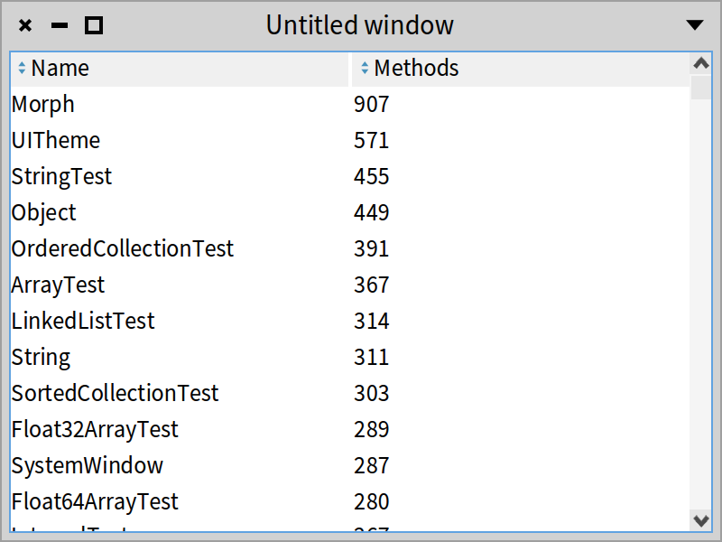
8.13 Sorting headers
The following script presents how to define a table with two sortable columns. Figure 8.12 shows the result after sorting the second column in descending order.
| classNameCompare methodCountSorter |
classNameCompare := [ :c1 :c2 | c1 name < c2 name ].
methodCountSorter := [ :c1 :c2 |
c1 methodDictionary size threeWayCompareTo: c2 methodDictionary size ].
SpTablePresenter new
addColumn: ((SpStringTableColumn title: 'Name' evaluated: #name)
compareFunction: classNameCompare);
addColumn: ((SpStringTableColumn
title: 'Methods'
evaluated: [ :c | c methodDictionary size ]) sortFunction: methodCountSorter);
items: Collection withAllSubclasses;
open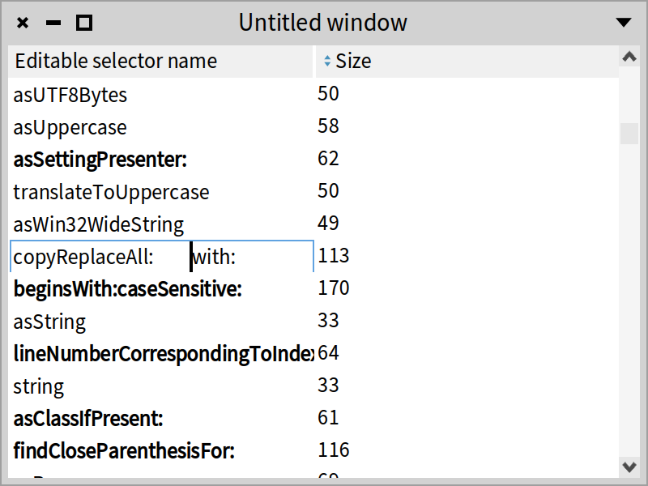
8.14 Editable tables
The following script shows that table cells can be editable using the messages beEditable and onAcceptEdition:. The resulting table is shown in Figure 8.13.
| items |
items := String methods.
SpTablePresenter new
addColumn:
(SpStringTableColumn new
title: 'Editable selector name';
evaluated: [ :m | m selector ];
displayBold: [ :m | m selector isKeyword ];
beEditable;
onAcceptEdition: [ :m :t |
Transcript
nextPutAll: t;
cr;
endEntry ];
yourself);
addColumn:
(SpStringTableColumn title: 'Size' evaluated: #size)
beSortable;
showColumnHeaders;
items: items;
open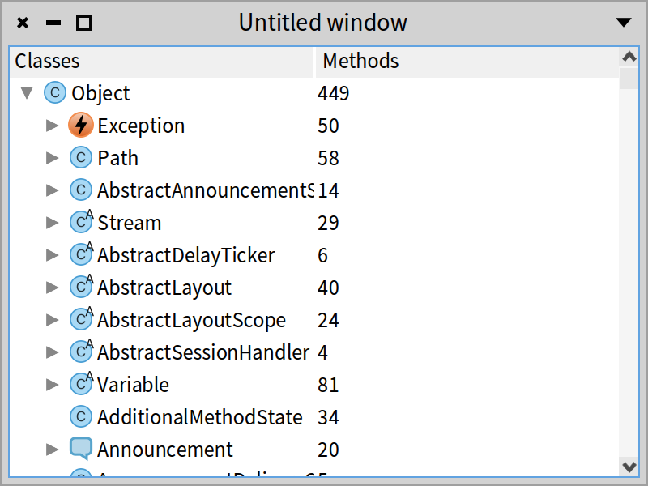
8.15 Tree tables
Spec offers a way to have a tree with extra columns. The class SpTreeTablePresenter encapsulates this behavior. Note that the first column is interpreted as a tree.
The following script shows that the first column will be a tree whose element is composed of an icon and a name: SpCompositeTableColumn. Figure 8.14 shows the window after expanding the root of the tree.
SpTreeTablePresenter new
beResizable;
addColumn:
(SpCompositeTableColumn new
title: 'Classes';
addColumn:
(SpImageTableColumn evaluated: [ :aClass |
self iconNamed: aClass systemIconName ]);
addColumn:
(SpStringTableColumn evaluated: [ :each | each name ] );
yourself);
addColumn:
(SpStringTableColumn new
title: 'Methods';
evaluated: [ :class | class methodDictionary size asString ]);
roots: { Object };
children: [ :aClass | aClass subclasses ];
openSending the messages width: and beExpandable to the SpCompositeTableColumn instance fixes the size of the column.
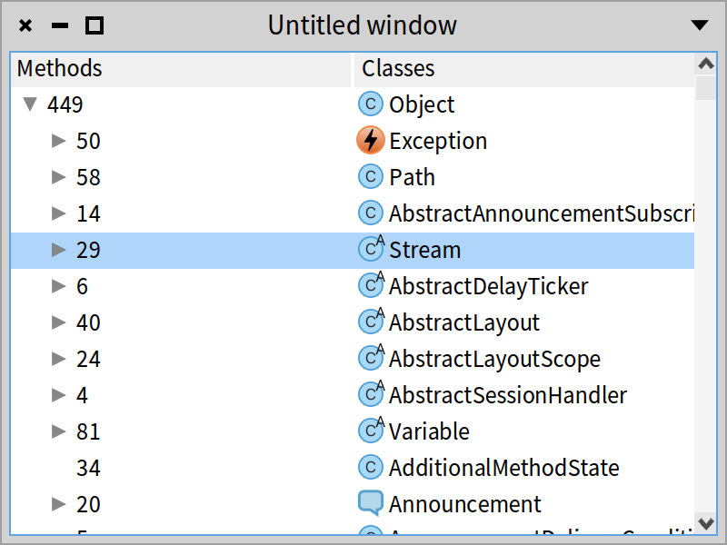
SpCompositeTableColumn new
title: 'Classes';
addColumn:
(SpImageTableColumn evaluated: [ :aClass |
self iconNamed: aClass systemIconName ]);
addColumn: (SpStringTableColumn evaluated: #name);
width: 250;
beExpandable;
yourselfYou can try the following silly example which results in Figure 8.15.
| compositeColumn |
compositeColumn := SpCompositeTableColumn new title: 'Classes';
addColumn: (SpImageTableColumn evaluated: [ :aClass |
self iconNamed: aClass systemIconName ]);
addColumn: (SpStringTableColumn evaluated: [ :each | each name ] );
yourself.
SpTreeTablePresenter new
beResizable;
addColumn: (SpStringTableColumn new
title: 'Methods';
evaluated: [ :class | class methodDictionary size asString ]);
addColumn: compositeColumn;
roots: { Object };
children: [ :aClass | aClass subclasses ];
open8.16 Conclusion
In this chapter, we presented important containers: list, component list, and table presenters.